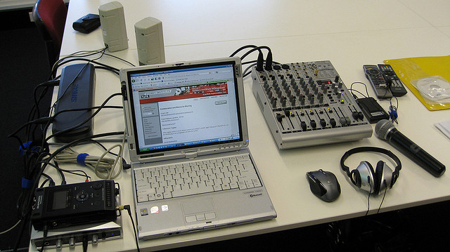

- Published by Elizabeth Yin -- Get updates of new posts here
I’m pleased to announce LaunchBit has been acquired by BuySellAds.
Growing up in the Bay Area during the dot.com boom, my co-founder Jennifer and I have long been inspired by entrepreneurs and the technology they build to better the world. (But perhaps more importantly, as teenagers, we were enamored with how much pizza you were allowed to eat.  ) In fact, we thought startups were so exciting that we began talking about starting a business together even as early as freshman year in high school! And in our junior year, we made a pact that someday we would go into business together.… Read the rest
) In fact, we thought startups were so exciting that we began talking about starting a business together even as early as freshman year in high school! And in our junior year, we made a pact that someday we would go into business together.… Read the rest
- Published by Elizabeth Yin -- Get updates of new posts here

By Sam Parr, organizer of Hustle Con
The Myth of Going Viral
In the summer of 2013, my team and I created a roommate-finding app appropriately named Roommates. In a nutshell, it was just like Tinder…but for roommates. After our team had built an amazingly awesome app, we needed users! To find users we ended up creating a series of infographics that were seen by hundreds of thousands of people and featured in Techcrunch, Huffington Post, Curbed SF, Venture Beat, The Next Web, The New York Observer, and dozens of other media outlets. Our infographic for San Francisco, for example, well exceeded 250k views in less than one week.… Read the rest
- Published by Elizabeth Yin -- Get updates of new posts here
image credit: Antonio Zugaldia
When SaaS was new about a decade ago, a lot of companies added a free plan. At the time, having a free plan was a nearly free marketing strategy, because it attracted product signups. These days, however, free SaaS plans are no longer unique. And in fact, for many SMB-focused SaaS companies, a free plan may not even make economical sense.
So, with the combination of free plans becoming harder to market and the rise in SaaS companies addressing the SMB market, I was curious if freemium was still popular amongst SaaS companies?
Obviously, it would be impossible to analyze every single SaaS company.… Read the rest
- Published by Elizabeth Yin -- Get updates of new posts here
image credit: Sean MacEntee
Ever notice that when you post to your Facebook page, your posts don’t reach most of your Facebook followers (people who have Liked your Facebook page)? How does Facebook decide who to show your Facebook posts to? We’ve been trying to reverse-engineer this algorithm.
In our last post, we showed that there actually are ideal times to post to Facebook (at least for us at LaunchBit). In today’s post, we’ll analyze whether there’s an ideal day of the week to post to Facebook. Note: this again is using our data at LaunchBit, so your mileage may vary.… Read the rest
- Published by Elizabeth Yin -- Get updates of new posts here
Facebook is a black box to marketers. If you post to your company page, your post often won’t be shown to everyone who has Liked it. At LaunchBit, we currently have 264 Likes on our company page. But, when we post to our page, you can see that most of the time, not even half of our audience sees our posts.
A lot of marketers claim there’s an ideal time to post to Facebook.
- Published by Elizabeth Yin -- Get updates of new posts here
I last wrote about whether doing lead generation on a small blog is worth the effort. Surprisingly, I found that it’s not a bad investment of time, because you do the work once, and then you reap the benefits there on out. When I published this post, someone on Quibb, asked me how our blog efforts compare to all our other content marketing efforts in generating leads.
Here’s a breakdown of our content marketing activities at LaunchBit and how they compare against each other. (Note: Our content marketing pales in comparison to efforts of much larger software companies, so this is by no means what is considered optimal — it’s just how we do things at LaunchBit)
Webinars: 100-600 leads per webinar

image credit: Stephan Ridgway
Webinars are by far one of our best content marketing activities.… Read the rest
- Published by Elizabeth Yin -- Get updates of new posts here

A few weeks ago, I read a great post on How to get your first 100 email subscribers by Bryan Harris for Noah Kagan’s blog. The author placed leadboxes around his blog and shared where he was able to get the most email signups for his email newsletter.
We were curious and decided to conduct a similar experiment for the last month (5/5-5/26). In fact, we straight up copied some of his ideas. In particular, what we wanted to know was whether these lead generation ideas would help us even though we have a small blog. We get between 1000-6000 blog visitors a month.… Read the rest
- Published by Elizabeth Yin -- Get updates of new posts here
I’m excited to announce that we’ll be releasing a book on email marketing in June! This is a book that we’ve been working on for a very long time based on data from across thousands of email lists. (Even though the current cover says only my name, this book was written by my colleagues Audrey Cu, Zachary Tong, Jennifer Chin, and me.)
A few things about this book:
1) This book is for data-driven marketers.

image credit justgrimes
There is too much fluff in marketing. There are too many so-called experts who want to give you advice on marketing best practices that are not grounded in anything.… Read the rest
- Published by Elizabeth Yin -- Get updates of new posts here

image courtesy of Twitter
Twitter cards are essentially apps that run within Twitter. One type of card that is particularly interesting to marketers is the Twitter Lead Generation card. We’ve previously written about how to set it up, but what can you do with it? How do you use it to encourage people to sign up for your email mailing list? 3 clever ideas we’ve seen:
1) Thank
Product Hunt founder Ryan Hoover started building a following for his blog. People would inevitably retweet his posts or favorite them. Ryan realized this was an opportunity to encourage people to sign up for his mailing list so that he could continue to reach these people with subsequent posts that might be useful to them.… Read the rest
- Published by Elizabeth Yin -- Get updates of new posts here

image credit: bionicteaching
A lot of companies talk about how to build a data-driven company cultures. And while this is important (and something we explicitly wrote in our company values at LaunchBit), we found that we needed to get more specific and tactical for our marketing team.
The Background
My co-founder Jennifer and I are very data-oriented people. In day-to-day conversations, we’ll build arguments with facts and experiments. We both are engineers by training, and I even TA-ed and tutored basic statistics at MIT. Data is really important to us and something we naturally wanted to explicitly write into our company values.… Read the rest


{kind=link}
{kind=link}
{kind=link}
{kind=link}